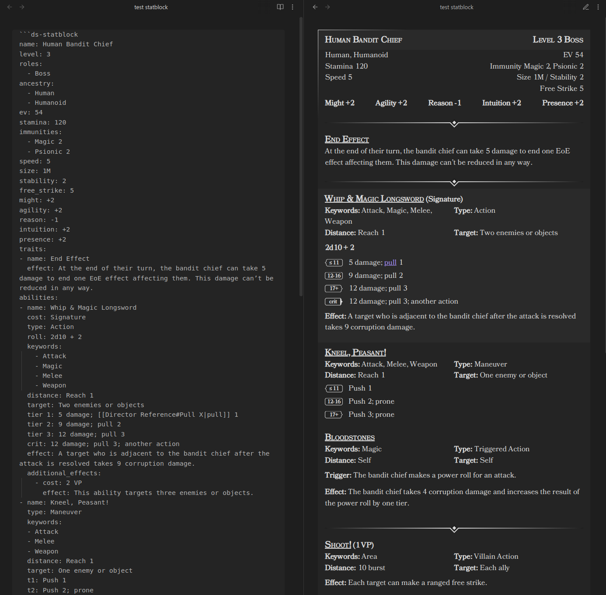

Statblock Element¶
The Statblock codeblock is a tool designed to parse and display statblocks within Obsidian. It allows you to define creatures or characters with various attributes, abilities, traits, and more using YAML syntax, and then renders this information in an organized layout for easy reference during gameplay or writing.

Usage¶
To use the Statblock Processor, insert a code block with the language identifier ds-statblock in your Obsidian note,
and then define your statblock using YAML syntax inside the code block.
Example statblock
~~~ds-statblock
name: Human Bandit Chief
level: 3
roles:
- Boss
ancestry:
- Human
- Humanoid
ev: 54
stamina: 120
immunities:
- Magic 2
- Psionic 2
speed: 5
size: 1M
stability: 2
free_strike: 5
might: +2
agility: +2
reason: -1
intuition: +2
presence: +2
traits:
- name: End Effect
effect: At the end of their turn, the bandit chief can take 5 damage to end one EoE effect affecting them. This damage can’t be reduced in any way.
abilities:
- name: Whip & Magic Longsword
cost: Signature
type: Action
roll: 2d10 + 2
keywords:
- Attack
- Magic
- Melee
- Weapon
distance: Reach 1
target: Two enemies or objects
tier 1: 5 damage; [[Director Reference#Pull X|pull]] 1
tier 2: 9 damage; pull 2
tier 3: 12 damage; pull 3
crit: 12 damage; pull 3; another action
effect: A target who is adjacent to the bandit chief after the attack is resolved takes 9 corruption damage.
additional_effects:
- cost: 2 Malice
effect: This ability targets three enemies or objects.
- name: Kneel, Peasant!
type: Maneuver
keywords:
- Attack
- Melee
- Weapon
distance: Reach 1
target: One enemy or object
t1: Push 1
t2: Push 2; prone
t3: Push 3; prone
additional_effects:
- cost: 2 Malice
effect: This ability targets each enemy adjacent to the bandit chief.
- name: Bloodstones
type: Triggered Action
keywords:
- Magic
distance: Self
target: Self
trigger: The bandit chief makes a power roll for an attack.
effect: The bandit chief takes 4 corruption damage and increases the result of the power roll by one tier.
- name: Shoot!
type: Villain Action
cost: 1 Malice
keywords: Area
distance: 10 burst
target: Each ally
effect: Each target can make a ranged free strike.
- name: Form Up!
type: Villain Action
cost: 2 Malice
effect: Each target shifts up to their speed. Until the end of the encounter, any enemy takes a bane on attacks against the bandit chief or any of the bandit chief’s allies if they are adjacent to that target.
keywords: Area
distance: 10 burst
target: Each ally
- name: Lead From the Front
type: Villain Action
cost: 3 Malice
keywords:
- Attack
- Weapon
distance: Self
target: Self
effect: The bandit chief shifts twice their speed. During or after this movement, they can attack up to four targets with Whip & Magic Longsword. Any ally of the bandit chief adjacent to a target can make a free strike against that target.
~~~

Field Definitions¶
Below is a detailed description of each field used in the statblock, including their types, default values, and whether they are required.
Header Fields¶
| Field | Type | Description | Required | Default Value |
|---|---|---|---|---|
name |
string |
The name of the creature. | Yes | N/A |
level |
integer |
The creature's level. | No | 0 |
roles |
array of string |
A list of roles assigned to the creature (e.g., "Boss", "Minion"). | No | [] |
ancestry |
array of string |
A list of ancestries or types the creature belongs to (e.g., "Human", "Humanoid"). | No | [] |
ev |
integer |
Encounter Value (EV) of the creature. | No | 0 |
stamina |
integer |
The creature's max stamina. | No | 0 |
immunities |
array of string |
A list of immunities the creature has (e.g., "Magic 2", "Psionic 2"). | No | [] |
speed |
integer |
Movement speed of the creature. | No | 0 |
size |
string |
The size category of the creature (e.g., "1M" for medium size). | No | "" |
stability |
integer |
Stability value of the creature. | No | 0 |
free_strike |
integer |
The free strike value of the creature. | No | 0 |
might |
integer |
The creature's might value. | No | 0 |
agility |
integer |
The creature's agility value. | No | 0 |
reason |
integer |
The creature's reason value. | No | 0 |
intuition |
integer |
The creature's intuition value. | No | 0 |
presence |
integer |
The creature's presence value. | No | 0 |
traits |
array of Trait |
Traits of the creature. See Traits below | No | [] |
abilities |
array of Ability |
Abilities of the creature. See abilities | No | [] |
Notes:
- Attribute values can be positive or negative integers. You can include a
+sign for positive values (e.g.,+2), but it's optional.
Traits¶
Each trait in the traits array consists of the following fields:
| Field | Type | Description | Required | Default Value |
|---|---|---|---|---|
name |
string |
The name of the trait. | Yes | N/A |
type |
string |
The action-type of the trait (e.g., "Maneuver", "Free Triggered Action"). | No | `` |
effect |
string |
A description of the trait's effect. | Yes | N/A |
Abilities¶
See the abilities documentation for field definitions